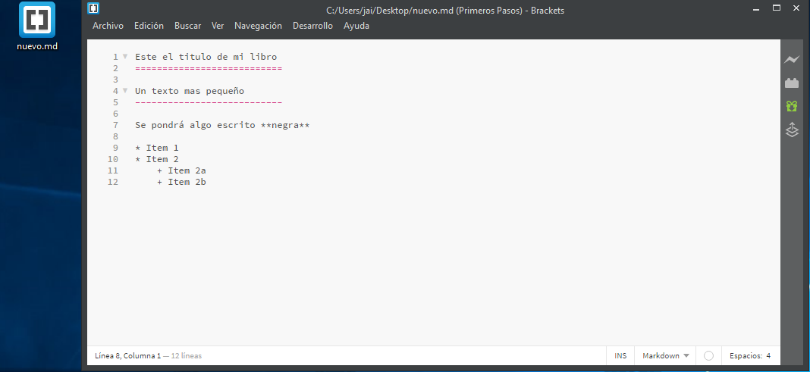
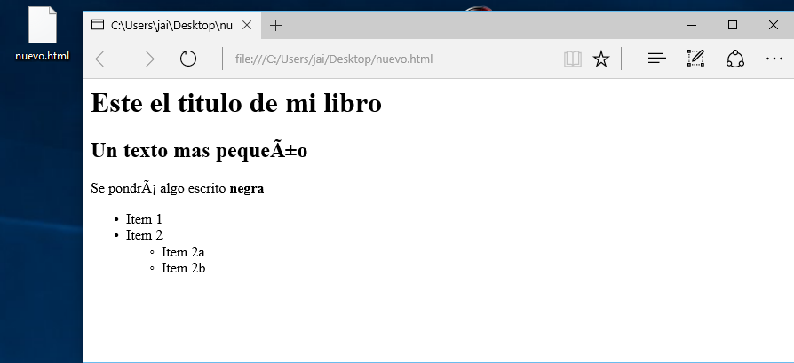
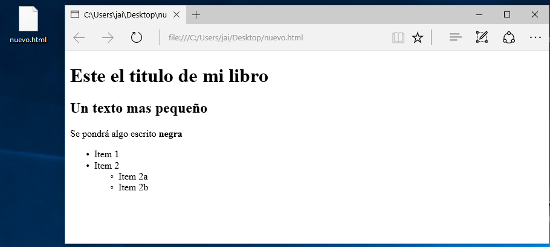
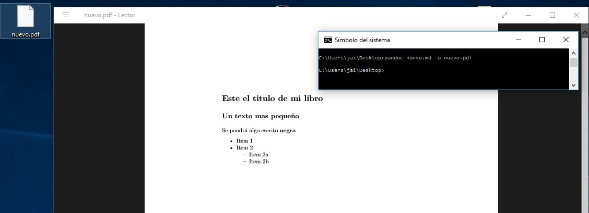
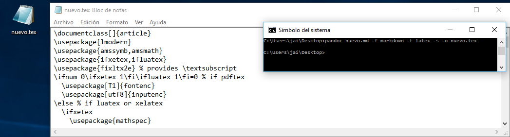

Utilización
Creamos un fichero md con código markdown  Abrimos la consola de comando de windows, nos posicionamos donde esta el archivo .md que hemos creado que en nuestro caso es nuevo.md y ejecutamos el siguiente comando
$ pandoc nuevo.md -o nuevo.html.
Como vemos en la siguiente imagen se ha creado un archivo html que tendrá el siguiente aspecto. 
Como vemos en la anterior imangen los caracter como la ñ no se visualizan para que estos carateres se puedan ver bien tenemos que coloacar la opcion -s en pandoc quedando asi el comando
$ pandoc nuevo.md -s -o nuevo.html, el html creado se relaizara de la siguiente manera. Otras Posibilidades de Conversiones
Nota: Para realizar las siguiente conversione hay que instalar :Latex.Para pasar de markdown a pdf, el comando es el siguiente
$ pandoc nuevo.md -o nuevo.pdfdando como resultado la siguiente imagen:
Para pasar de markdown a latex, el comando es el siguiente
$ pandoc nuevo.md -f markdown -t latex -s -o nuevo.texdando como resultado la siguiente imagen: